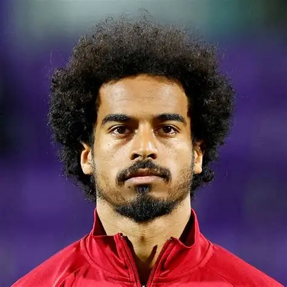
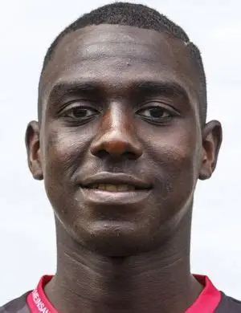
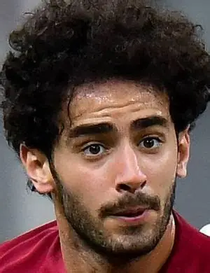
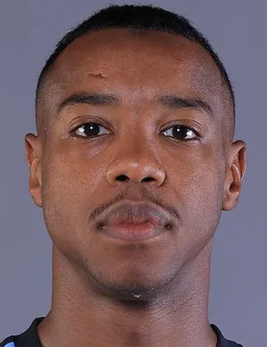
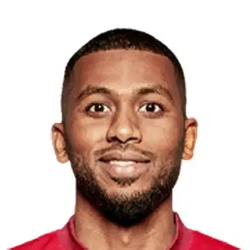
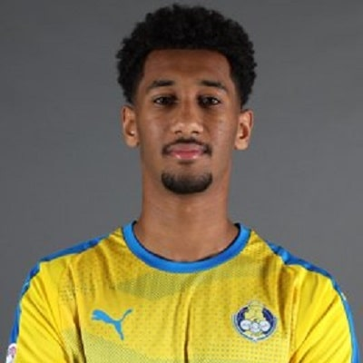
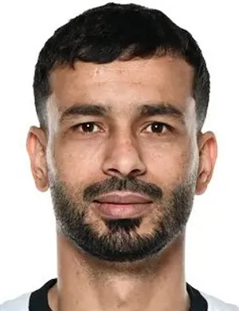
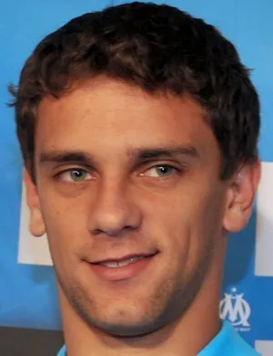
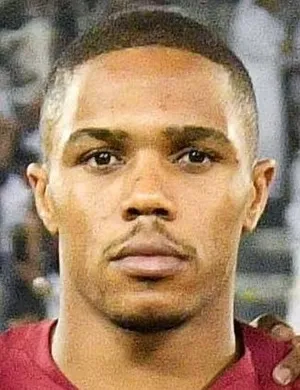
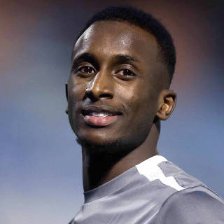

CATAR
Catar busca consolidarse en la élite del fútbol asiático y demostrar su crecimiento tras organizar el Mundial 2022.

Formación 4-3-3










Catar logró su clasificación mostrando el nivel competitivo que lo ha convertido en una de las selecciones más fuertes de Asia.
La selección catarí ganó la Copa Asiática en 2019 y 2023, consolidándose como una potencia regional.
Superar la fase de grupos y conseguir la mejor actuación mundialista de su historia.
AFC
Los Granates
2022
Hassan Al-Haydos
CATAR
VS
SUIZA

BMO Field, Toronto
CATAR
VS
CANADÁ

BC Place, Vancouver
CATAR
VS
BOSNIA Y HERZEGOVINA

BC Place, Vancouver

Catar es una de las selecciones más exitosas del continente asiático.

Akram Afif es considerado la gran estrella del equipo.

Organizó la Copa Mundial de la FIFA 2022.

Ganó la Copa Asiática en 2019 y 2023.

Busca consolidarse entre las selecciones competitivas del mundo.